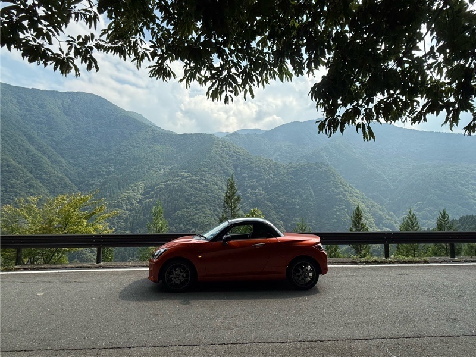
週末。思うところがあり、激暑のなか三峰様詣で…という名のドライブ。 さすがにルーフオープンはムリでした💦
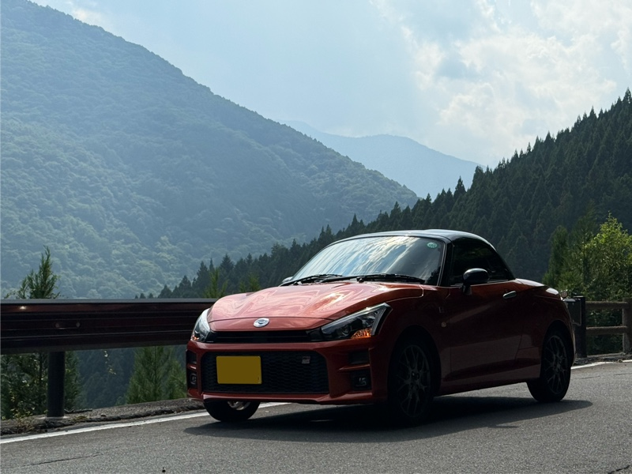
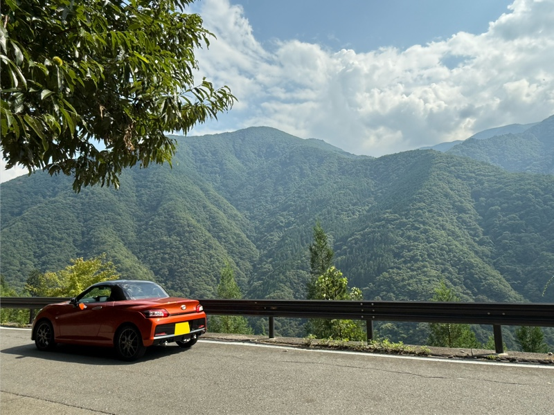
前が繋がっていたので、栃本から荒川沿いの集落を抜けて。 国道が落石か何かで通行止めの間、 未完成・未舗装のバイパストンネルを通れるというレアな機会も気になっていたのですが やはり関越方向の往来が多く渋滞気味のため、結局往復とも雁坂トンネル経由となりました。 （料金所はいつメンのおじさんだった。いい加減、顔見知りレベル🤣）
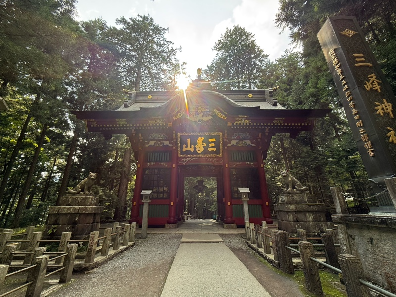
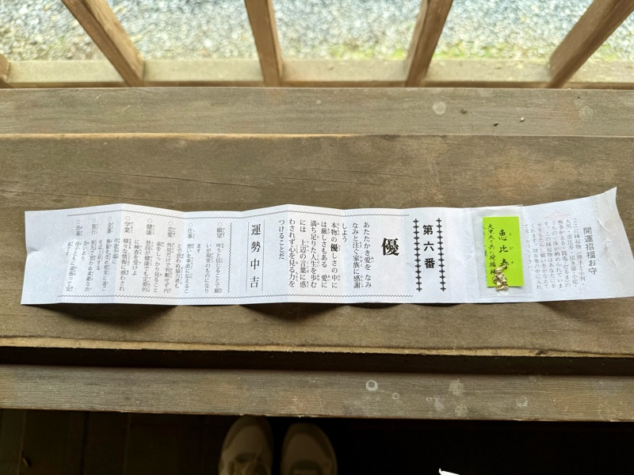
おみくじは中吉。 でも、『旅行：旅先で思わぬ素敵な出会いあり』ですって⁉️ 何の出会いがあるのだろう… …まぁ高確率で心トキメク✨風景でしょうけど😂最近あちこちでお手振りいただけるのも、私には充分素敵な出会いですね！
非常に暑い＆お盆休み明けにも関わらず、何気に参拝者が多数いました😳 皆さんこの暑さのなか、遥々よく来るなぁー。（←オマエモナーですが）
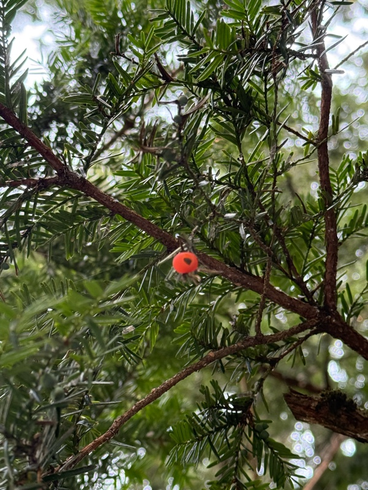
イチイの実。初秋から実がなり出すらしいけど、高温過ぎるのか実が少ない🤔 もう陽も短くなってきているし、地球の動き的には秋が始まっているのでしょうかね。。
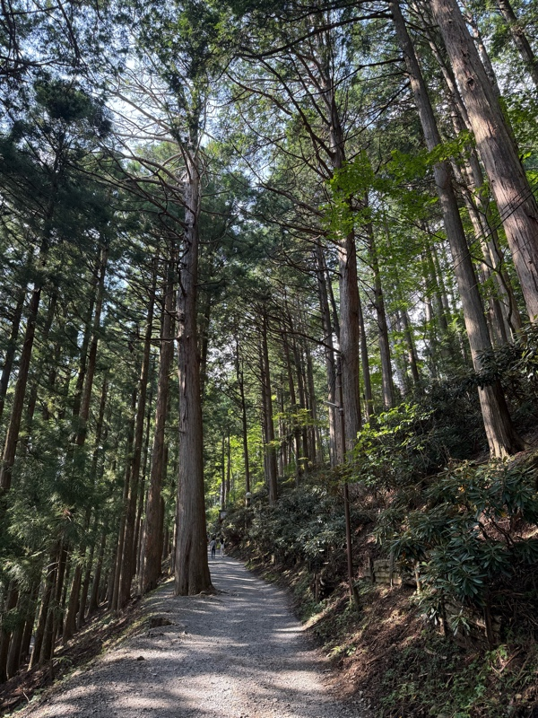
暑いけど、木陰は見た目から涼しげな＇気分＇にはなる💦（汗止まらん💦）
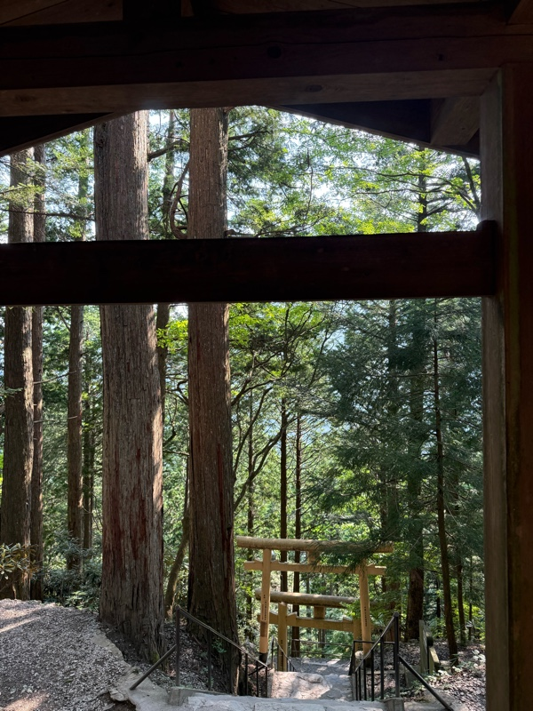
ここの、子連れオオカミの像が微笑ましくて好きです。いつも必ず手を合わせます。
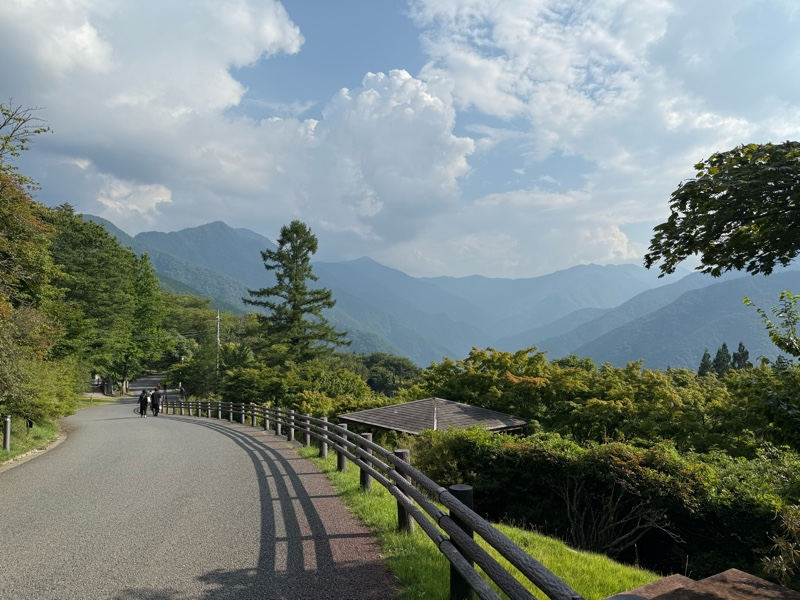
暑過ぎなためか、鹿などは見かけず。
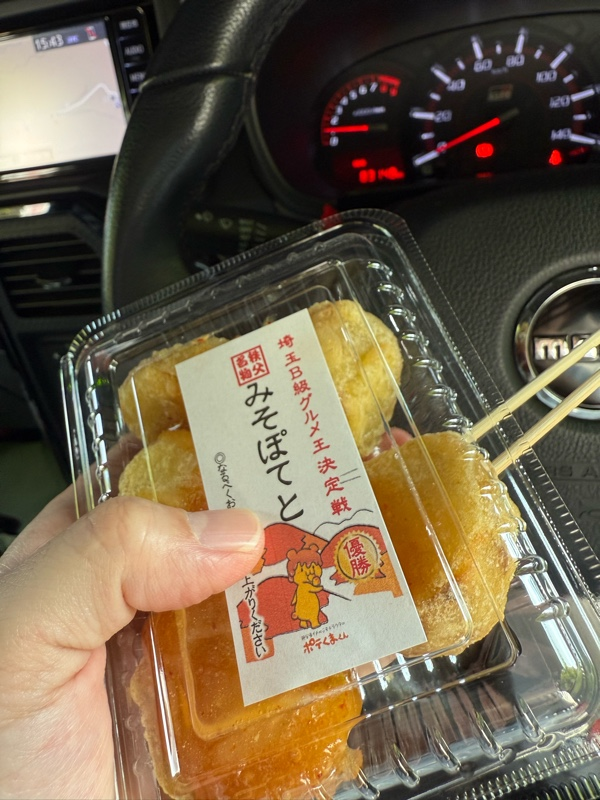
お茶屋さんでお団子かお蕎麦をと思いましたが、店内は涼しくなさそうなのでポテトを買って車内で。 サンシェードで前面隠してもサイドからは丸見え(笑 数台空けて横に停めていたカップルが戻って来て、ぱくッとしているとこを目撃されてしまいました。
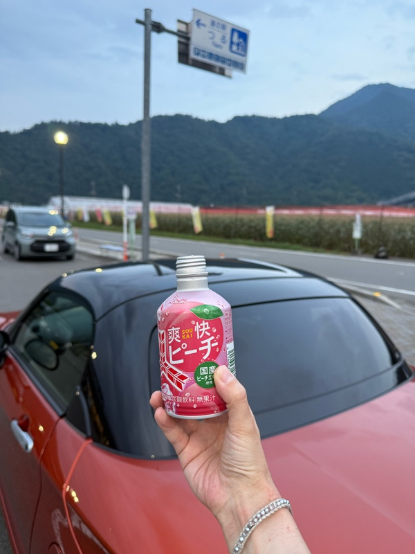
帰路、雁坂トンネルまでの道ではカーブの先にキョトン顔のお猿さん。気を付けないとですね💦 その先、フルーツラインは夕暮れには早かったものの、大好きな風景に気持ちが和みました☺️ 後はマイ定番、道の駅つるで休憩。炭酸苦手なのだけど、水分不足で一気飲みです。 今回は1回も屋根を開けられませんでした…😭
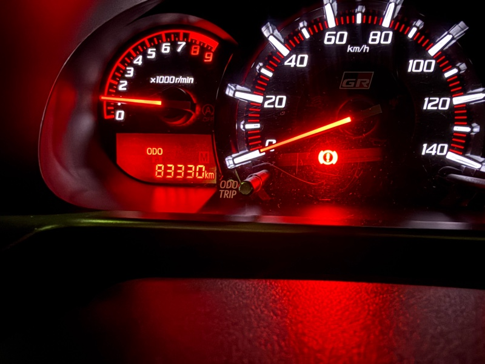
数日後、気付いたらODO 83,000キロ過ぎていました。。 今年後半に2回目の車検。過酷な環境ながら、まだまだエンジンは絶好調です♪ （自分の感覚としては50,000キロ辺りで機械として動力が馴染んで来るかなと思うので、 今は働き盛りなお年頃でしょうか👍）